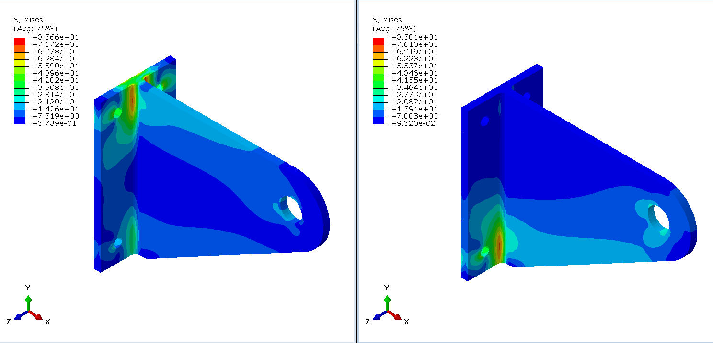
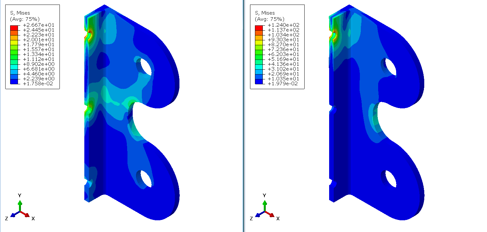
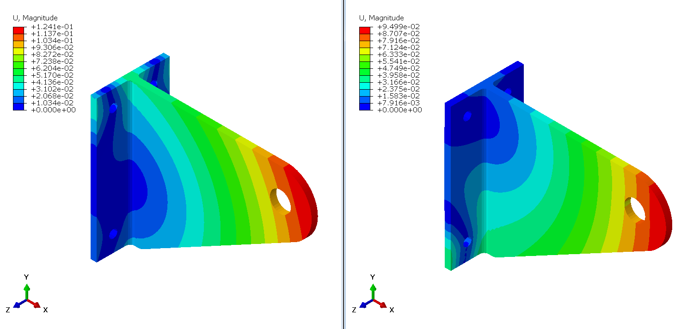
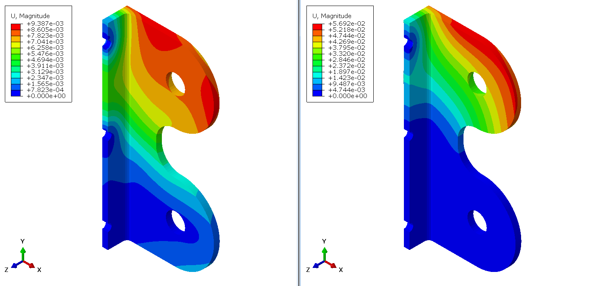

Design of the hinge bracket assembly which connects the aileron to the wing.
Left hand inboard hinge bracket assembly
Short hinge bracket design study was made as a small prelude to the next project of the analysis of potted inserts in honeycomb sandwich composites.
In the analyzed configuration, aileron connects through four hinges fastened on the rear wing spar and on all of the four hinges an actuator is connected. Using four actuators might unnecessarily increase the total weight of the assemblies, so a trade-off study can be calculated to find the most optimal configuration which would balance the available actuator load, assembly mass and stroke.
Both brackets have thickness of 3 mm. Even though this might seem too thin (and is definitely open to further changes) upon examining the available commercial catalogues it was found that axial bearings with thicknesses between 2.5 mm and 3 mm can carry radial loads of up to 1.67 kN (calculated actuator load is 1151 N).
For the material of the brackets Aluminum 2024-T3 alloy was chosen. Parts are to be coated with either phenolic resin, paints or special coatings to prevent galvanic corrosion. All fasteners are to be made from 6Al-4V Titanium alloy as to also prevent corrosion.
In the numerical model, a reference point was defined at the center of each hole and was coupled to the hole surface using distributed coupling. Boundary conditions used were pins in the connecting areas while the hole representing the connection of the two brackets had biaxial force defined. Hole in the aileron bracket, to which the actuator is connected was pinned. Two force cases were obtained using hand calculations, one set for downwards deflection of 17°, and one for upwards deflection of 30°. Hinge force calculated in the Aerodynamics chapter for the case of 30° deflection was scaled linearly for the 17° deflection case and is equal to 747.4 N.
Maximum stresses appear on the most inboard assembly which is caused by the biggest moment arms and dimensions of parts. This is the reason why only this assembly will be analyzed (satisfying stress allowables here automatically satisfies the rest).
Considering the moment arms are the largest in the assembly closest to the wing root, only that assembly was numerically tested. Results show that both of the brackets stand well within the material boundaries with factor of safety 1.5.
Highest Mises stresses appear on the aileron bracket for the case of 30° deflection (124 MPa) on the hole of the topmost pin that connects the bracket to the aileron spar web.
Mises stresses - wing bracket; Left: 17° deflection; Right: 30° deflection
Mises stresses - aileron bracket; Left: 17° deflection; Right: 30° deflection
Maximum displacement - wing bracket; Left: 17° deflection; Right: 30° deflection
Mises stresses - aileron bracket; Left: 17° deflection; Right: 30° deflection